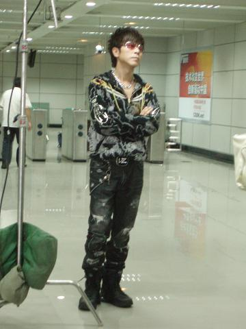
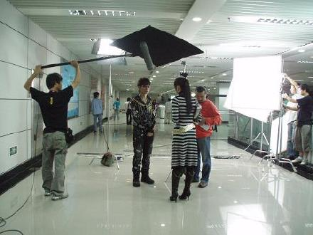
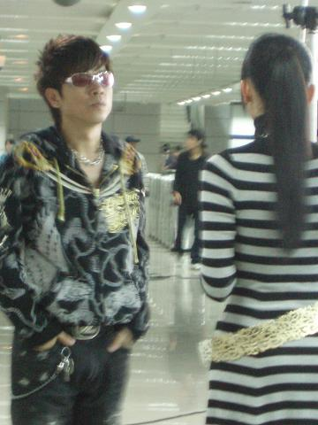
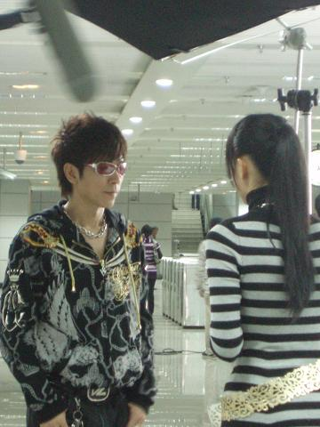
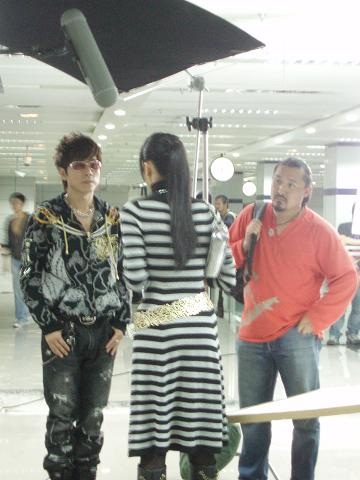
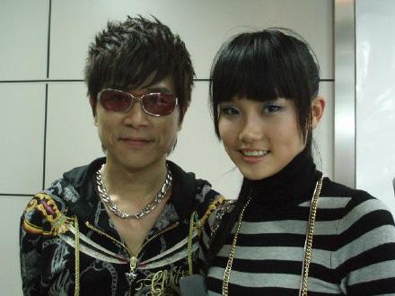
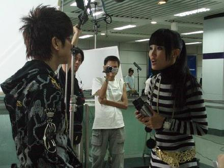
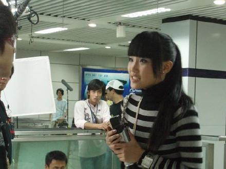

以前上学的时候就很喜欢他的歌...感谢《晴天日记》让我认识了儿时的偶像-
小伍哥好亲切...一点都没有大牌架子...果然是大牌中的大牌

小伍哥在<晴天日记>演一个大明星叫SKY...哈哈

这场戏讲的是:SUKI和李晴在地铁里帮CC开小型演唱会时...无意中发现大明星SKY也在人群中看CC唱歌...

于是SUKI就追着SKY想让SKY在自己的演唱会上唱CC写的歌...因为虽然CC是一个地铁歌手...但是他写的一些歌都非常非常好听...只是没有人帮助CC...

SUKI找过SKY的经纪人...但是最终决定权在SKY...
苦苦哀求SKY...(我们的副导演阿杰友情出演SKY的经纪人)哈哈

我们都是歌手...我们都跑来当演员...哈哈

SKY正在拒绝SUKI...因为当时他以为SUKI只是马路上的FANS

求求你了
